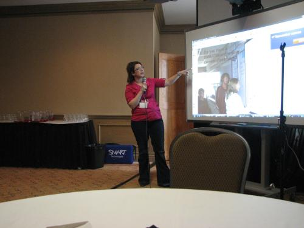
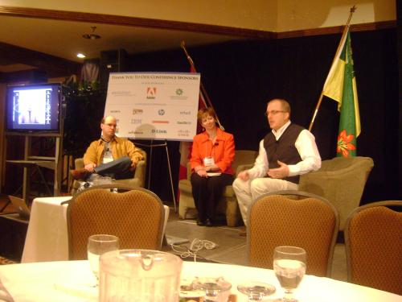

Blogs
Podcasting:
C. P. Bazin Webster
From my less than comfortable seat on the floor by the door, I blatantly violated fire codes and craned my neck to see the screen. I knew a fair bit about Podcasting already [read: I knew nothing about Podcasting], but nonetheless, I listened carefully.
One of the first and foremost things I heard is that Podcasting makes classrooms come alive (or something to that effect, someone stepped on my hand as the presenter was saying it). We were treated to some audio clips that some young thundercats (children) had created. Even for young kids, they did a really good job. They sounded natural and easy to understand, and of course, that perfect blend of innocence and imperfection that only young kids being recorded can master. They were able to open up the learning and convey the material within a safe, user friendly context.
The floor immediately opened up and the group engaged in a discussion about Audacity and Garage Band. I have used the latter and frankly, I love it, despite the fact there has to be a fruit on the computer.
The main constructive criticism that Podcasters receive is that they must be able to self-regulate; that is, they must turn out a product with a suitable length. Three to four minutes is generally considered the absolute maximum for informative material. Make it even less if you find yourself droning on and on and on and on and on and on and on and on and on carrot and on and on and on and on and on and on and on and on and on.
I essentially inferred that a Podcast is nothing more than an audio clip used as a medium to convey a message, be it humorous, informative, serious, etc. They provide an interactive way to communicate. Video casts can also be used, but they are less common. Furthermore, audio programs like Garage Band can be used to add sound effects, remove stutters, enhance quality, etc. This laptop is extremely warm on my lap top, and my legs are asleep. The things I do for you Lois…
After hearing many different speeches at the
I never really fully grasped how Podcasting could serve as such a valuable learning aid. It also betters non-educational applications, such as for sheer entertainment purposes. We were treated to some absolutely hilarious British humor as an example of a Podcast. If anyone, schools included, needs an effective, free method to interactively share information, I would whole-heartedly endorse Podcasting, even though I know little more than just the basics. Someone just left – dare I steal their seat? Never mind, I am nearly done. Anyhow, people can control what they share and don’t share, people can remain totally anonymous, and they are super easy to create. With minimal investment, one can produce professional Podcasts and sound clips.
All in all, I am glad I was able to sit in on this speech.
Smart Board Session-- March 24th
Taylor and I attended a great session facilitated by Clarence Fisher on the use of SMART boards in the classroom. Our school has several SMART boards, and we were anticipating learning about all the great things they can do!
Clarence Fisher was a great speaker; he is a full-time teacher of grade 7 and 8. He believes that classrooms are quality places for kids to be- - In fact, he says they are the best place for kids to be! He helps kids become more literate so they can become better citizens in the 21st century.
During the session, Clarence outlined some of the features of SMART boards in the classroom including:
· When students are reading a story on the SMART board, there are sound effects that accompany the story; for example, a story about a train can have sound effects that help students better understand the story.
· SMART boards also have spotlight pen features. This helps teachers and students to draw different shapes and to create different objects that can be used to teach; for example, you can draw geometric shapes on the board.
SMART boards also have a zoom feature; you can see a magnifying glass to make equations and objects on the screen larger.·
The SMART board's external resource is when you can make realistic movement. For example this tool helps teachers to create tracks on the SMART board so a skier will go on the tracks. This application is mostly used for math or physics.
Finally the page recorder will record everything you do on the SMART board. This application can be used when students write an equation, Teachers can play it back and see what students did to do that equation.
In closing, we liked that we could see more ways that SMART boards work in the classroom. We think we need to learn more about them, as they seem to be a valuable resource!
Literate Online - Reading and Writing are Different on the Web
Clarence Fisher
After conducting a one-on-one interview yesterday (Monday) with Clarence Fisher, I was moderately excited [read: ecstatic] to attend one of his lectures. Something about his voice, his laid back demeanour, and of course his subject material…it all makes for a great lecture. The session was about online literacy. I know the meaning of both words separately, but not when strung together. Nonetheless, I knew I would leave with more than I came in with.
After some witty banter (praise Warlick), we got down to brass tacks. Contrary to common belief, kids do not need to develop many more skills in order to survive the technological age. They can get by with the same skills they have always had – they are just broadened much more than they were before.
Everyone has an audience, no matter what they do. If even five people read your personal Facebook page, they are still your audience. After many evolutions over the many eras, texts (words, the alphabet, not cell-related) have transformed into what we are familiar with today. Long before the internet was established and people used what were called “books” (rhymes with cooks). Literacy back then was just as important as it is now. Case in point – the little text boxes in textbooks. Students may not know whether or not to break free from the linear, chronological text read them. The same principles are applied to web pages today.
One of the more startling theories we must consider in recent years is that corporations are affecting what it means to be literate. After Apple started selling Podcasts on iTunes, lectures and other audio and video files became thousands of times more accessible than ever before. Blogging has become a technological revolution. Not just peoples’ personal blogs, but news companies and such have adopted a type of blogging. As new news stories come in, they are posted to a blog. People can read the text and leave comments as they please. As more facts come in, more blog entries are posted, and the preliminary headlines are gradually sent to the bottom and eventually disappear.
With technological ability and even basic literacy, people can do almost anything imaginable. People can work together instantly from around the world. Email has been one of the prime bases for sharing instantly. But with sharing mediums like Wikis or Google Docs, people can edit projects or share information and save it on a centralized source that anyone can access, from However, kids need to know how to access relevant information. They need to know how to filter the pertinent information through and forget about the rest of the stuff. On the opposite end of the spectrum, over-filtering on Big Brother’s end is also a bad thing. Simply giving kids access to information is not enough. They need to know what to do with it, how to use it, why they should use it. Kids can do nearly anything on a computer, such as download music, but may not know how to get the most out of a computer for academic purposes. Another thing some kids forget to do is simply use their brains. They can be easily fooled by an attractive, professional looking web page that portrays hoaxes or urban legends as fact. It all comes back to knowing what to filter. The final step after collecting and filtering information into a finished product is to share it. One can create new pages, edit exxisting pages, and simply get their information out where everyone can see it. Anyone can have a voice nowadays. It is important for people to share. Students can follow up what they have done, and read other peoples' opinions or comments about their work. Sharing provides a basis for a world of useful information. With a few limitations, and guidelines for awareness about safety (which is highly important), the sky is the limit for the students of today. Who knows what capabilities students will have ten years from now... To summarize...
Excellent presentation.
David Warlick
Mr. David Warlick is a remarkable man. Sitting through his keynote speech was a very eye opening experience that I am sure will have a lot of people thinking for a very long time.
Mr. Warlick started his presentation by trying to show us just how big the Internet actually is. He explained that in 2002, only a one- hundredth of one percent of all things published was actually printed. The rest of these documents were floating around on the web. He then tried to visually describe the future that teachers are preparing their students for. Slowly, he removed things that we did not know the exact future of out of a digital office . (For example he took out the telephone because it is still evolving and changing every day) When there was nothing left in the office, Warlick had proven his point. We know nothing about the future; It is completely unpredictable. Teachers have a new job criteria; preparing children for a future we can not clearly understand.
Mr. Warlick’s main theme was that we must reinvent and redefine literacy. Teaching today must evolve to suit the world around it. Twenty years ago teaching was reading, writing, and arithmetic. People were taught to read an article that was handed to them by someone who had already evaluated the document and found it to be reliable. Only teaching a student to read, in today’s world that Warlick described, is dangerous. After several examples, David’s point that we must teach children how to first find the information, then critically evaluate it, organize it, and then understand what is true and what is false, was clearly stated. Children must be taught how to decide if an article is worthy because the Internet allows for many things to be posted.
Mr. Warlick said “I will not wear one of these computer jackets, but I am not teaching the children for my future”. Children must learn how to express themselves and in today’s world and in order to make people listen they must be competitive. Learning to write something that grasps people’s attention is an important part of surviving in this world.
Warlick’s conclusion was that we must stop integrating technology; this is not as new and exciting for the children as it is for us. We must redefine literacy so that it reflects today’s environment and integrate that.
Lyneah
Telling the Story - Live
I have never been to an iT
Although a teacher’s life is hectic, Cassidy, Fisher and Kuropatwa have managed to work technology into their everyday learning and move away from the traditional classroom. For example, Cassidy has brought SMART boards and Nintendo DS into her math classes to get the students involved and explore problem solving.
R.O.V.E.R. (Recommended Online Video Educated Resources)
R.O.V.E.R. represents an innovative way for teachers to have videos on demand in a step toward the 21st Century.
R.O.V.E.R- is a "on demand" video streaming service which
- is a progressive upgrade to current video services
- allows for potential conversion for duplication services
Converting to R.O.V.E.R allows for proactive support showing immediate notice when server is down as well as the power to track videos down to the millisecond. Also with the capability of storing all servers within the school it allows for no bandwidth problems.
R.O.V.E.R. is represented by members of the Ministry of Education including Sandra Bellegarde, Steven Zimmer, Ron Lawson, and Myrna Martyniuls.
In each district there is one to three pilot sites. However despite the excellent advantages of R.O.V.E.R. it was presented as a pilot and is not availble to the public until the fall of 2010.
Intergrating SMART Boards into What You are Already Doing!
Being at the 2009 IT
Milissa Gavel is the principle of Davison’s Elementary School in
The session was focused on two main things: when, where, and how to use a SMARTboard in a classroom; and the Senteo. One example caught my interest. The use of an overhead projector is nothing new but a simple application on the SMARTboard allows you to use a screen shade to block certain parts of the board. This is essential because when students are trying to focus on learning something and there is a distraction on the side it distracts them from the information being presented. Displaying information with the SMARTboard is faster and can be done more efficiently than the original white board. Collaborative learning is fun and seems more like a reward to the children than a daily activity and I believe this is vital in the quest for learning for children.
The other focus point of the session was the Senteo SMART technology (An interactive response system which provides a direct wireless connection between you and your students). The importance of teachers being able to access information the students need especially in “new units” or when teaching new information could make this tool key in any learning environment. We used the Seneto SMART technology as an example by finding out what percent of the listeners had a SMARTboard in their class room. 52% possessed the smart board. By a simple click of a button on a key pad the teacher could do a diagnostic test and find what percent of his or her class understands the concept and who does not.
The session in general was very interesting and entertaining. Mrs.Gavel did a great job explaining how to use the smart board and how to utilize all of its applications. Even though there were some technological problems with the SMARTboard, the session went smoothly.

Dean Shareski: Ten Disruptions That Could Transform Your Classroom
Dean Shareski’s presentation followed the main thought that there are ten things or different “disruptions” that could transform your classroom. These were his key points:
1. Smart Phones and how they could benefit the classroom
2. Low Cost Computing and replacing textbooks.
3. Cloud Computing (ability to access software on demand from the internet)
4. Live Streaming
a. Brian Crosby is grade 5 teacher who teaches live by ustreaming to one of his students who has cancer and can not come to the school physically. This is fun for her, She becomes educated; She can ask questions, watch, raise her hand, and be almost completely interactive, and it is cost free
5. Micro blogging or sharing “notes." New programs such as twitter and facebook have been referred to as "social glue."
6. Immersive Environments
7. Privacy.
8. Time shifting: teaching children based on their personal needs, not on mass production of graduates. This is done through developing personal relationships with students, Teaching can happen everywhere.
9. Open Courseware. (online)
10. Outsourced Instruction
His overall message was a question. Will technology ever replace teachers? His answer? "No." Teachers who know how to use technology efficiently to help their students connect and collaborate together online will however replace those who don’t
Thank you to Ryan Hackl, classroom teacher and IT Specialist at Spiritwood High, for his thoughts and overview of the presentation. He summarized the session by saying, “It explored the potential for the future of the classroom.”
I enjoyed this presentation, and thought that it was very beneficial to understand the role that technology can play in a classroom. Shareski’s points were all validated with evidence and stated very clearly. Overall he was a great speaker made me enthusiastic about being there.
Telling the new story...Live

So I was just at a keynote session, and there were four speakers so that was a plus. The main things that were discussed were how they're incorporating technology and blogging in their everyday class life. It was pretty amazing how Kathy Cassidy has little grade ones writing daily blogs, posting pictures, and commenting. The other guy was Darren Kuropatwa and he had some interesting things to say as well. I was very impressed that he has Math students doing their notes and equations on the site everyday. It's also good that he has them take turns. It was interesting to see how they started to get into the whole blogging thing. The way Kathy really got into it was by her class posting blogs and then having other child bloggers from around the world commenting on their stuff. Dean was saying that this technology is good for his school. Since he comes from a small town it helps them to be more connected and excited about school. All of them do a ton with technology... from creating wikis to writing blogs, to playing with Nintendo DS's, making radio plays, and much more. There have been very few negative problems with incorporating technology. There have been a few problems here and there, but nothing too serious. I found the session interesting and would like to see a school that truly embodies the ideas that the presenters shared.
Written by Megan
Blog on Digital Storytelling
This session starts out with me actually getting there early and the presenter, Mr.Hammond showing a power point explaining ways of using music, digital art and different websites to create stories. These ideas were awesome to get students to be creative, have fun, and get involved retelling or creating stories. You can use only sound or visual art separately or put them together to tell a story. This is great way to see if students comprehend the story's material and details and to get them to listen to details. The students can also see how musical ideas are developed from stories and how they relate. One program he referred to is GarageBand which is used for creating music using different instrument sounds. Another part of the session was about how to teach your students about Comic art- two things you teach them is how to use symbolic imagery, and how to use illustration to make stories more engaging. You have to be careful of copyright when working with music and pictures. Even though students will want to use their own music this can be bad because it might be protected. With pictures make sure release forms are signed. - When creating stories with music: Make list of characters Make list of special objects Make list of plot elements Figure out emotions of characters Make each character represent a different instrument Make each object is represented by a sound loop Make sure there are different sound loops for emotions -when creating stories with Comic art: Create a simple symbol for each character You don’t necessarily need to use music with comic art. Students should plan in advance and sketch their stories out. Decide who the characters are Decide the location Decide what they are saying I thought this session was funny and I think most people at the session thought it also very entertaining. I learned a lot and found it interesting. I am excited to use the programs I learned about. Places to visit: VoiceThread- a way to add digital photos then add your voice to go with them. Garageband – create music Comic Life, BubbleShare, ToonDoo- ways to make online comics Go!Animate- a way to make animated movies.